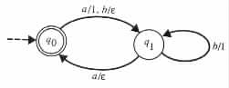
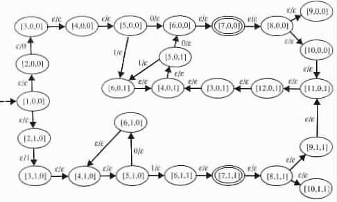
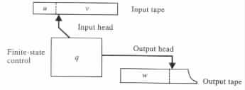
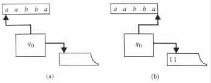
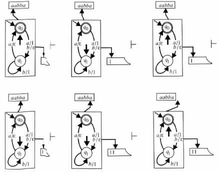
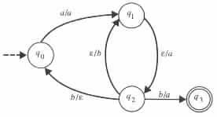
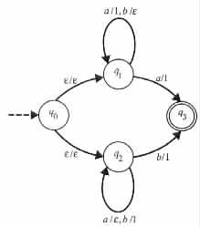
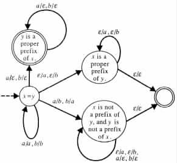
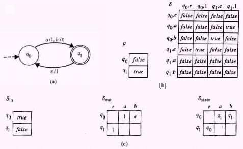

.
.
Abstracted Finite-Memory Programs
Finite-State Transducers
Configurations and Moves of Finite-State Transducers
Determinism and Nondeterminism in Finite-State Transducers
Computations of Finite-State Transducers
Relations and Languages of Finite-State Transducers
From Finite-State Transducers to Finite-Memory Programs
Central to the investigation of finite-memory programs is the observation that the set of all the states reachable in the computations of each such program is finite. As a result, the computations of each finite-memory program can be characterized by a finite set of states and a finite set of rules for transitions between those states.
Abstracted Finite-Memory Programs
Specifically, let P be a finite-memory program with m variables x1, ¼ , xm,
and k instruction segments I1, ¼ , Ik. Denote the initial value of the variables of P
with .
Each state of P is an (m + 1)-tuple [i, v1, ¼, vm], where i is an integer between 1 and k, and v1, ¼ , vm are values from the domain of the variables. Intuitively, a state [i, v1, ¼, vm] indicates that the program reached instruction segment Ii with values v1, ¼ , vm in the variables x1, ¼ , xm, respectively.
Example 2.2.1 Let P be the program in Figure 2.2.1. The domain of the variables is assumed to equal {0, 1}, and the initial value is assumed to be 0. Let [i, x, y] denote the state of P that corresponds to the ith instruction segment Ii, the value x in x, and the value y in y.
The state [1, 0, 0] indicates that the program reached the first instruction segment with the value 0 in x and y. The state [5, 1, 0] indicates that the program reached the fifth instruction segment with the value 1 in x and the value 0 in y.
From state [5, 1, 0] the program can reach either state [6, 1, 0] or state [6, 1, 1]. In the
transition from state [5, 1, 0] to state [6, 1, 0] the program reads the value 0 and writes
nothing. In the transition from state [5, 1, 0] to state [6, 1, 1] the program reads the value 1
and writes nothing. 
The computational behavior of P can be abstracted by a formal system <Q, S, D, d, q0, F>, which is defined through the algorithm below. In the formal system
, ¼, ], and d to be an empty
set. q0 is called the initial state of P, and d is called the transition table of P.
 e then add a to S. Similarly,
if (q, a, p, r) is a transition rule in d and r
e then add a to S. Similarly,
if (q, a, p, r) is a transition rule in d and r e, then add r to D. Each a in S is
called an input symbol of P, and S is called the input alphabet of P. Similarly,
each r in D is called an output symbol of P, and D is called the output alphabet
of P.
e, then add r to D. Each a in S is
called an input symbol of P, and S is called the input alphabet of P. Similarly,
each r in D is called an output symbol of P, and D is called the output alphabet
of P.
Example 2.2.2 Assume the notations of Example 2.2.1. The initial state of the program P is [1, 0, 0]. By executing the first instruction, the program can move from state [1, 0, 0] and either enter the state [2, 0, 0] or the state [2, 1, 0]. In both cases, no input symbol is read and no output symbol is written during the transition between the states. Hence, the transition table d for P contains the transition rules ([1, 0, 0], e, [2, 0, 0], e) and ([1, 0, 0], e, [2, 1, 0], e).
Similarly, by executing its second instruction, the program P must move from state [2, 1, 0] and enter state [3, 1, 0] while reading nothing and writing 1. Hence, d contains also the transition rule ([2, 1, 0], e, [3, 1, 0], 1).
The number of states in Q is no greater than 12 × 2 × 2. {0, 1} is the input and the
output alphabet for the program P. {[7, 0, 0], [7, 1, 1]} is the set of accepting states for P.
In general, a formal system M consisting of a six-tuple <Q, S, D, d, q0, F> is called a finite-state transducer if it satisfies the following conditions.
The transition rule (q0, a, q1, 1) of M uses the input symbol a and the output symbol 1.
The transition rule (q1, a, q0, e) of M uses the input symbol a and no output symbol.
Each finite-state transducer <Q, S, D, d, q0, F> can be graphically represented by a transition diagram of the following form. For each state in Q the transition diagram has a corresponding node, which is shown by a circle. The initial state is identified by an arrow from nowhere that points to the corresponding node. Each accepting state is identified by a double circle. Each transition rule (q, a, p, r) in d is represented by an edge labeled with a/r, from the node labeled by state q to the node labeled by state p. For notational convenience edges that agree in their origin and destination are merged, and their labels are separated by commas.
Example 2.2.4 The transition diagram in Figure 2.2.2
|

|
Example 2.2.5 The transition diagram in Figure 2.2.3
|

|
Configurations and Moves of Finite-State Transducers
Intuitively, a finite-state transducer M = <Q, S, D, d, q0, F> can be viewed as an abstract computing machine. The computing machine consists of a finite-state control, an input tape, a read-only input head, an output tape, and a write-only output head (see Figure 2.2.4).
|

|
The input tape is used for holding the input uv of M. The input head is used for accessing the input tape. The output tape is used for holding the output w of M, and the output head is used for accessing the output tape. The finite-state control is used for recording the state of M.
On each input a1 · · · an from S*, the computing machine M has some set of possible configurations. Each configuration , or instantaneous description, of M is a pair (uqv, w), where q is a state in Q, uv = a1 · · · an, and w is a string in D*. Intuitively, a configuration (uqv, w) says that M on input uv reached state q after reading u and writing w. With no loss of generality it is assumed that Q and S are mutually disjoint.
Example 2.2.6 Let M be the finite-state transducer of Example 2.2.3 (see Figure 2.2.2). The configuration (aabq1ba, 1) of M says that M reached the state q1 after reading u = aab from the input tape and writing w = 1 into the output tape. In addition, the configuration says that v = ba is the remainder of the input (see Figure 2.2.5(a)).
|

|
The configuration (q0aabba, e) of M says that M reached the state q0 after reading nothing (i.e., u = e) from the input tape and writing nothing (i.e., w = e) into the output tape. In addition, the configuration says that v = aabba is the input to be consumed (see Figure 2.2.5(b)).
The configuration (aabbaq0, 1) of M says that M reached state q0 after reading all the
input (i.e., v = e) and writing w = 11. In addition, the configuration says that the input
that has been read is u = aabba.
A configuration (uqv, w) of M is said to be an initial configuration if q = q0 and u = w = e. An initial configuration says that the input head is placed at the start (leftmost position) of the input, the output tape is empty, and the finite-state control is set to the initial state.
A configuration (uqv, w) of M is said to be an accepting configuration if v = e and q is an accepting state in F. An accepting configuration says that M reached an accepting state after reading all the input.
Example 2.2.7 The finite-state transducer M of Example 2.2.3 (see Figure 2.2.2) has the initial configuration (q0aabba, e), and the accepting configuration (aabbaq0, 11) on input aabba (see Figure 2.2.5(a) and Figure 2.2.5(b), respectively).
(aabbaq0, e) and (aabbaq0, 111) are also accepting configurations of M on input
aabba. On the other hand, (q0aabba, e) is the only initial configuration of M on input
aabba.
The transition rules of M are used for defining the possible moves of M. Each move uses some transition rule. A move on transition rule (q, a, p, r) consists of changing the state of the finite-state control from q to p, of reading a from the input tape, of writing r to the output tape, and of moving the input and the output heads, |a| and |r| positions to the right, respectively.
A move of M from configuration C1 to configuration C2 is denoted C1  M C2, or
simply C1 C2 if M is understood. A sequence of zero or more moves of M from
configuration C1 to configuration C2 is denoted C1 M * C2, or simply C1 * C2, if M is
understood.
M C2, or
simply C1 C2 if M is understood. A sequence of zero or more moves of M from
configuration C1 to configuration C2 is denoted C1 M * C2, or simply C1 * C2, if M is
understood.
Example 2.2.8
Let M be the finite-state transducer of Example 2.2.3 (see Figure 2.2.2). On input aabba,
M can have the following sequence (q0aabba, e) * (aabbaq0, 11) of moves between
configurations (see Figure 2.2.6):
|

|
(aq1abba, 1) (aaq0bba, 1) (aabq1ba, 1) (aabbq1a, 11) (aabbaq0, 11).
The sequence consists of five moves. It starts with a move (q0aabba, e) (aq1abba, 1)
on the first transition rule (q0, a, q1, 1) of M. During the move, M makes a transition from
state q0 to state q1 while reading a and writing 1.
The second move (aq1abba, 1) (aaq0bba, 1) is on the fourth transition rule
(q1, a, q0, e) of M. During the move, M makes a transition from state q1 to state q0 while
reading a and writing nothing.
The sequence continues by a move on the second transition rule (q0, b, q1, e), followed by a move on the third transition rule (q1, b, q1, 1), and it terminates after an additional move on the fourth transition rule (q1, a, q0, e).
The sequence of moves is the only one that can start at the initial configuration and end
at an accepting configuration for the input aabba.
By definition, |a| = 0 or |a| = 1 in each transition rule (q, a, p, r). |a| = 0 if no input symbol is read during the moves that use the transition rule (i.e., a = e), and |a| = 1 if exactly one input symbol is read during the moves. Similarly, |r| = 0 or |r| = 1, depending on whether nothing is written during the moves or exactly one symbol is written, respectively.
Determinism and Nondeterminism in Finite-State Transducers
A finite-state transducer M = <Q, S, D, d, q0, F> is said to be deterministic if, for each state q in Q and each input symbol a in S, the union d(q, a) È d(q, e) is a multiset that contains at most one element.
Intuitively, M is deterministic if each state of M fully determines whether an input symbol is to be read on a move from the state, and the state together with the input to be consumed in the move fully determine the transition rule to be used.
A finite-state transducer is said to be nondeterministic if the previous conditions do not hold.
Example 2.2.9 The finite-state transducer M1, whose transition diagram is given in Figure 2.2.2, is deterministic. In each of its moves M1 reads an input symbol. The transition rule to be used in each move is uniquely determined by the state and the input symbol being read.
If M1 reads the input symbol a in the move from state q0, then M1 must use the transition rule (q0, a, q1, 1) in the move. If M1 reads the input symbol b in the move from state q0 then M1 must use the transition rule (q0, b, q1, e) in the move.
On the other hand, consider the finite-state transducer M2, which satisfies M2 = <Q, S, D, d, q0, F> for Q = {q0, q1, q2, q3}, S = {a, b}, D = {a, b}, d = {(q0, a, q1, a), (q1, e, q2, a), (q2, e, q1, b), (q2, b, q0, e), (q2, b, q3, a)}, and F = {q3}. The transition diagram of M2 is given in Figure 2.2.7.
|

|
On moving from state q0, the finite-state transducer M2 must read an input symbol. On moving from state q1, the finite-state transducer M2 does not read an input symbol. The transition rules that M2 can use on moving from states q0 and q1 are uniquely determined by the states, and, therefore, these states are not the source for the nondeterminism of M2.
The source for the nondeterminism of M2 is in the transition rules that originate at
state q2. The transition rules do not determine whether M2 has to read a symbol in moving
from state q2, nor do they specify which of the transition rules is to be used on the moves
that read the symbol b.
Computations of Finite-State Transducers
The computations of the finite-state transducers are defined in a manner similar to that for the programs. An accepting computation of a finite-state transducer M is a sequence of moves of M that starts at an initial configuration and ends at an accepting configuration. A nonaccepting , or rejecting, computation of M is a sequence of moves on an input x for which the following conditions hold.
A computation is said to be a halting computation if it consists of a finite number of moves.
Example 2.2.10 Let M be the finite-state transducer of Example 2.2.3 (see Figure 2.2.2). On input aabba the finite-state transducer M has a computation that is given by the sequence of moves in Example 2.2.8 (see Figure 2.2.6). The computation is an accepting one.
Alternatively, on input aab the finite-state transducer M has the following sequence of
moves: (q0aab, e) (aq1ab, 1) (aaq0b, 1) (aabq1, 1). This sequence is the only one
possible from the initial configuration of M on input abb; it is a nonaccepting computation
of M.
The two computations in the example are halting computations of M.
By definition, on inputs that are accepted by a finite-state transducer the finite-state transducer may have also executable sequences of transition rules which are not considered to be computations.
Example 2.2.11 Consider the finite-state transducer M whose transition diagram is given in Figure 2.2.7. On input ab, M has the accepting computation that moves along the sequence of states q0, q1, q2, q3. Similarly, on input ab, M also has an accepting computation that moves along the sequence of states q0, q1, q2, q1, q2, q3. However, on input ab across the states q0, q1, q2, q0, M's sequence of moves is not a computation of M.
On input a the finite-state transducer has only one computation. The computation is a nonhalting computation that goes along the sequence of states q0, q1, q2, q1, q2, ¼ On the other hand, on input aba the Turing transducer has infinitely many halting computations and infinitely many nonhalting computations. All the computations on input aba are nonaccepting computations.
The halting computations of M on input aba consume just the prefix ab of
M and move through the sequences q0, q1, q2, q1, q2, ¼ , q1, q2, q3 of states. The
nonhalting computations of M on input aba consume the input until its end and move
through the sequences q0, q1, q2, q1, q2, ¼ , q1, q2, q0, q1, q2, q1, q2, ¼ of states.
By definition, each move in each computation must be on a transition rule that allows the computation to eventually read all the input and thereafter reach an accepting state. Whenever more than one such alternative exists in the set of feasible transition rules, any of these alternatives can be chosen. Similarly, whenever none of the feasible transition rules satisfy the conditions above, then any of these transition rules can be chosen. This fact suggests that we view the computations of the finite-state transducers as being executed by imaginary agents with magical power.
An input x is said to be accepted , or recognized , by a finite-state transducer M if M has an accepting computation on x. An accepting computation that terminates in an accepting configuration (xqf, y) is said to have an output y. The output of a nonaccepting computation is assumed to be undefined.
A finite-state transducer M is said to have an output y on input x if it has an accepting computation on x with output y. M is said to halt on x if all the computations of M on input x are halting computations.
Example 2.2.12 The finite-state transducer M whose transition diagram is given in Figure 2.2.8
|

|
M accepts all inputs. However, the finite-state transducer of Example 2.2.11 accepts
exactly those inputs that have the form ababa · · · bab.
As in the case of programs, the semantics of the finite-state transducers are characterized by their computations. Consequently, the behavior of these transducers are labeled with respect to their computations.
For instance, a finite-state transducer M is said to move from configuration C1 to configuration C2 on x if C2 follows C1 in the considered computation of M on x. Similarly, M is said to read a from its input if a is consumed from the input in the considered computation of M.
Example 2.2.13
The finite-state transducer whose transition diagram is given in Figure 2.2.8 on input baabb
starts its computation with a move that takes M from state q0 to state q2. M then makes
four moves, which consume baab and leave M in state q2. Finally, M moves from state q2
to state q3 while reading b.
Relations and Languages of Finite-State Transducers
The relation computed by a finite-state transducer M = <Q, S, D, d, q0, F>, denoted
R(M), is the set { (x, y) | (q0x, e) * (xqf, y) for some qf in F }. That is, the relation
computed by M is the set of all the pairs (x, y) such that M has an accepting computation
on input x with output y.
The language accepted , or recognized, by M, denoted L(M), is the set of all the inputs that M accepts, that is, the set { x | (x, y) is in R(M) for some y }. The language is said to be decided by M if, in addition, M halts on all inputs, that is, on all x in S*.
The language generated by M is the set of all the outputs that M has on its inputs, that is, the set { y | (x, y) is in R(M) for some x }.
Example 2.2.14
The nondeterministic finite-state transducer M whose transition diagram is given in
Figure 2.2.8 computes the relation R(M) = { (x, 1i) | x is in {a, b}*, i = number of a's in x
if the last symbol in x is a, and i = number of b's in x if the last symbol in x is
b }. The finite-state automaton M accepts the language L(M) = {a, b}*.
Example 2.2.15 The nondeterministic finite-state transducer M whose transition diagram is given in Figure 2.2.9
|

|
 x }.
x }.
As long as M is in its initial state "x = y" the output of M is equal to the portion of the input consumed so far.
If M wants to provide an output that is a proper prefix of its input, then upon reaching the end of the output, M must move from the initial state to state "y is proper prefix of x."
If M wants its input to be a proper prefix of its output, then M must move to state "x is a proper prefix of y" upon reaching the end of the input.
Otherwise, at some nondeterministically chosen instance of the computation, M
must move to state "x is not a prefix of y, and y is not a prefix of x," to create a
discrepancy between a pair of corresponding input and output symbols.
From Finite-State Transducers to Finite-Memory Programs
The previous discussion shows us that there is an algorithm that translates any given finite-memory program into an equivalent finite-state transducer, that is, into a finite-state transducer that computes the same relation as the program. Conversely, there is also an algorithm that derives an equivalent finite-memory program from any given finite-state transducer. The program can be a "table-driven" program that simulates a given finite-state transducer M = <Q, S, D, d, q0, F> in the manner described in Figure 2.2.10.
|
The program uses a variable state for recording M's state in a given move, a variable in for recording the input M consumes in a given move, a variable next_ state for recording the state M enters in a given move, and a variable out for recording the output M writes in a given move.
The program starts a simulation of M by initializing the variable state to the initial state q0 of M. Then M enters an infinite loop.
The program starts each iteration of the loop by checking whether an accepting state of M has been reached at the end of the input. If such is the case, the program halts in an accepting configuration. Otherwise, the program simulates a single move of M. The predicate F is used to determine whether state holds an accepting state.
The simulation of each move of M is done in a nondeterministic manner. The program guesses the value for variable in that has to be read in the simulated move, the state for variable next_ state that M enters in the simulated move, and the value for variable out that the program writes in the simulated move. Then the program uses the predicate d to verify that the guessed values are appropriate and continues according to the outcome of the verification.
The domain of the variables of the program is assumed to equal Q È S È D È {e}, where e is assumed to be a new symbol not in Q È S È D, used for denoting the empty string e.
In the table-driven program, F is a predicate that assumes a true value when, and only when, its parameter is an accepting state. Similarly, d is a predicate that assumes a true value when, and only when, its entries correspond to a transition rule of M.
The programs that correspond to different finite-state transducers differ in the domains of their variables and in the truth assignments for the predicates F and d.
The algorithm can be easily modified to give a deterministic finite-memory program whenever the finite-state transducer M is deterministic.
Example 2.2.16 For the finite-state transducer M of Figure 2.2.11(a),
|

|
The program also allows that for F and d there are parameters that differ from those specified in the tables. On such parameters the predicates are assumed to be undefined.
The finite-state transducer can be simulated also by the deterministic table-driven program in Figure 2.2.12.
|
The predicate din determines whether an input symbol is to be read on moving from a given state. The function dout determines the output to be written in each simulated move, and dstate determines the state to be reached in each simulated state.
The deterministic finite-state transducer can be simulated also by a non-table-driven finite-memory program of the form shown in Figure 2.2.13.
|
It follows that the finite-state transducers characterize the finite-memory programs, and so they can be used for designing and analyzing finite-memory programs. As a result, the study conducted below for finite-state transducers applies also for finite-memory programs.
Finite-state transducers offer advantages in
 y /* I11 */
until false /* I12 */
y /* I11 */
until false /* I12 */  x }.
x }.  e then
write out
state := next_ state
until false
e then
write out
state := next_ state
until false  e then
write out
state := next_ state
until false
e then
write out
state := next_ state
until false